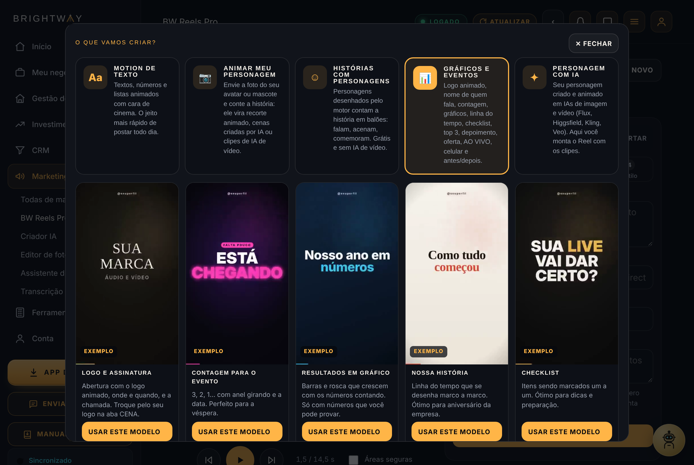

09 · Marketing
BW Reels Pro: gráficos e eventos
Em 🎬 MODELOS, a categoria GRÁFICOS E EVENTOS traz 10 modelos prontos, cada um com vídeo de exemplo. Também dá para trocar qualquer cena por um desses tipos na aba CENA (o campo Tipo tem o grupo “Gráficos e eventos”): a cena já vem preenchida e mostra só os campos que importam.

GRÁFICOS E EVENTOS: toque no modelo para ver o exemplo e em USAR.
- 1Abertura e marca: logo animado (use a sua imagem na aba MÍDIA), nome e cargo de quem fala, local e data, selo AO VIVO, vídeo dentro de um celular.
- 2Números: contagem 3, 2, 1, gráfico de barras ou rosca (um item por linha, “Rótulo: número”) e oferta com o preço contando. Gráfico sem fonte não vira vídeo — escreva de onde veio o número (ex.: “dados próprios”).
- 3Listas animadas: linha do tempo (“2015 — nasce a produtora”), checklist que vai sendo marcado e top 3 do 3º ao 1º.
- 4Prova e comparação: depoimento com estrelas (só frases reais, com autorização do cliente), antes e depois com cortina e tela dividida — escolha a segunda mídia em “Segunda mídia”.